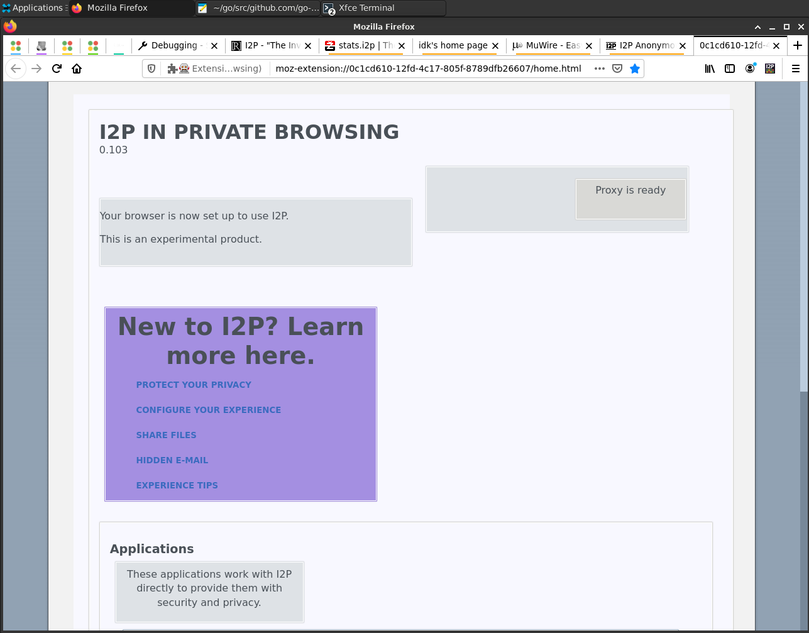
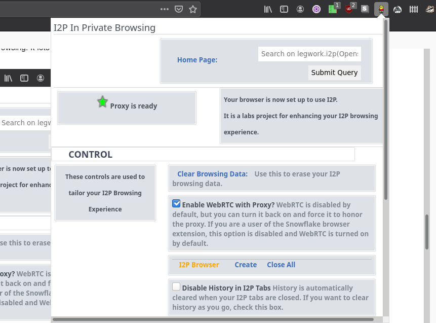
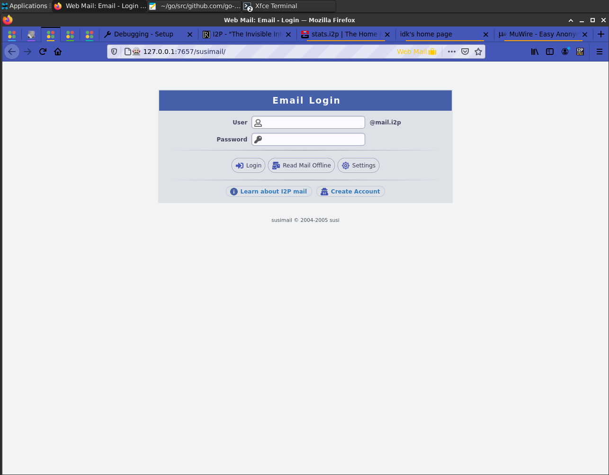
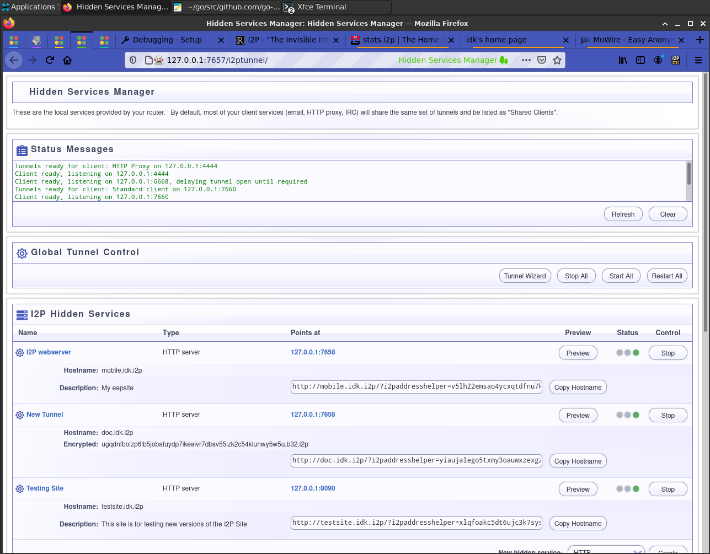
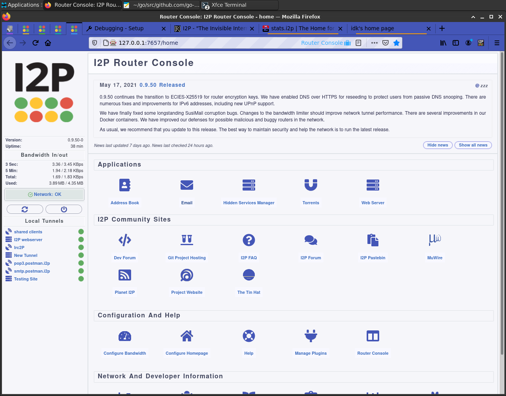
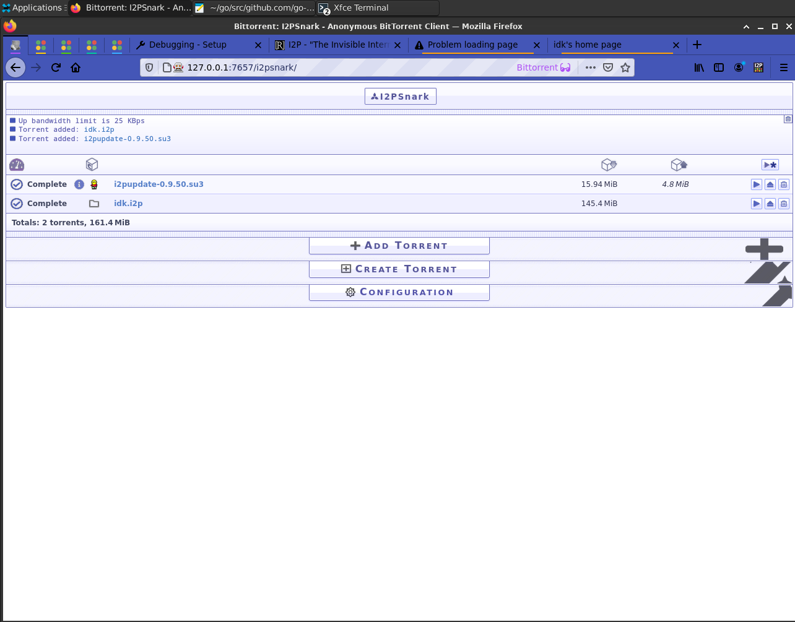
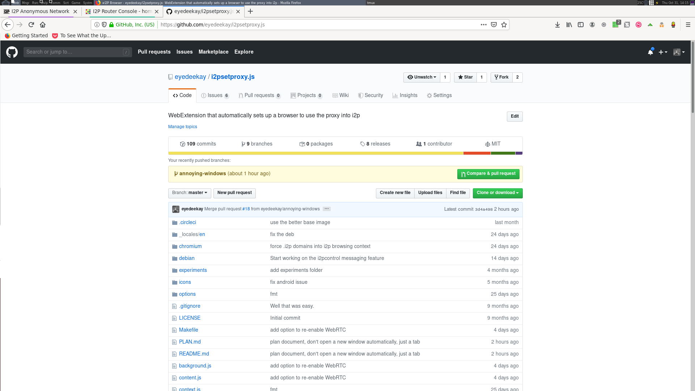

I2P in Private Browsing Mode(Firefox-Only)
This is an Experimental webextension which introduces a set of new "Private
Browsing" modes to Firefox-based browsers(Supporting webextensions) that makes
it easier to configure a browser to use I2P securely and adds features for
making I2P applications easier to use. It does this by isolating I2P-specific
settings to Contextual Identities within Firefox, then loading them
automatically when the user requests them. It also adds convenience and
management features specific to I2P like protocol handlers and native messaging
systems.
Installation(Cross-Platform):
For desktop users this addon is available from addons.mozilla.org, where you
will be able to recive automatic updates:
I2P in Private Browsing.
Debian Installation:
Should you prefer, it is possible to install this extension system-wide by
side-loading it into Debian. You can generate your own deb file by running the
command:
make deb
and then you can install it with:
sudo apt install ../i2psetproxy.js_*.deb
Bittorrent Download:
The self-hosted plugin is available from bittorrent both within the I2P and
Clearnet Bittorrent network(With a web seed to support it in case one goes
dead).
Help us out
There are also bittorrent entries in an atom feed which you can fetch from the
github releases using this URL:
https://github.com/eyedeekay/I2P-in-Private-Browsing-Mode-Firefox/releases/download/docs/releases.atom
If you add this to your BiglyBT torrent feed, you will automatically pick up
new releases of the plugin, download them, possibly from the web seed, and then
seed them to the rest of the torrent network. By donating a tiny amount of space
you can help make the delivery of plugin updates to everyone more reliable.
Usage:
- Basically, it "Just Works." After you install the plugin, browsing to an I2P
domain will automatically stop the current tab and re-open the I2P site in an
I2P Browser tab.
- Besides that, four bookmarks are added to the "Bookmarks Toolbar," which
will take you to visit your Java I2P applications, or the "Simplified I2P
Landing Page" embedded in the plugin:
- 
- Also, there's a menu for accessing I2P functionality while you're browsing.
It lets you control a few settings in a granular way.
- 
- You can re-enable WebRTC but force it to always use the proxy that is
enforced by the tab.
- You can either force the browser to delete all history for I2P sites
immediately, or you can close all your I2P Browser tabs at once and delete
the history for I2P browsing when you're done.
- That's all there is to it! Your browser is configured to safely use and
administer I2P
Features
- [done] Provide a way to launch into an I2P-Specific contextual identity
(container). Intercept requests to .i2p domains and automatically route them
to the I2P container. Isolate the router console from other local
applications by automatically intercepting requests to the router console to
another container.

- [done] Indicate the I2P browser is in use visually. Find an
acceptable way to indicate it on Android.
- 
- [done] Set the http proxy to use the local I2P proxy automatically.
Provide specific configuration for other types of I2P proxies(SOCKS,
isolating HTTP)
- [done] Disable risky webRTC features/offer the option to re-enable
them with the proxy enforced.
- [done] Change the color of the browser window to indicate that I2P is in
use
- 
- [ready/broken/wip] Provide help in a variety of languages.
- [wip] Monitor the health and readiness of the I2P router it is
instructed to use. Currently the plugin checks whether the HTTP Proxy is
working by fetching an image from "http://proxy.i2p" and displaying a result.
A work-in-progress binding to i2pcontrol is available in ./i2pcontrol, it is
inert at this time.
- [Done] Handle router console applications under their own origins and
within their own contextual identity. (1) The router console is automatically
confined to it's own container tab. (2) Use a custom protocol handler to
place each i2p application/plugin under it's own origin, shortening router
console URL's and placing applications under their own origin.
- 
- [wip] Handle Torrents by talking to i2psnark-rpc plugin and then
adding them directly into the Firefox downloads drop-downs, menus, etc. If I
can. Right now instead of talking to snark-rpc, it uses a web-based protocl
handler that simply auto-fills the torrent into i2psnark.
- 
- [barely started] Isolate traffic by contextual identity to it's own HTTP
Proxy tunnel, each reflecting it's own pseudonymous identity within I2P. The
contextual identities. For now, the contextual identities used to manage
browsing are "I2P Browsing" and "Web Browsing" where I2P Browsing is capable
of using an outproxy but in the case of traffic destined for the clearnet
does not do header rewriting, and Web Browsing falls back to the Proxy
configured in Firefox. The I2P Browsing will be expanded to
- I2P Amnesiac Browsing: Use for General Browsing, stores no history and
uses an HTTP Proxy with a very short tunnel-close timeout and no key-reuse.
- I2P Social Networking: Use this for logging into social network accounts,
forums, and other interactive asynchronous public communication platforms
where your identity is behaviorally linkable. This has a very long
tunnel-close timeout and key-reuse until specifically invoked.
- I2P Blogging: Use this for posting content to the web interface of your
blog or to other similar websites that you create content on.
- 
Video
Documents
- Browser Outline: This document is an outline of each of
the browser extension's feature panels in presentation form.
- Smart Lander Design: This is the original outline of
the smart landing page which became the I2P home page within the browser and
the drop-down control panel.
Super Extra Important Background Info:
This plugin's viability is directly related to the viability of Mozilla and
Tor's work on hardening Firefox itself and of particular interest are the
"Uplift" and "Fusion(Firefox Using Onions)" projects.
Links about Project Uplift
- Tor Uplift is a project which
brings important features of the Tor Browser to the mainstream of Firefox
users by including patches from Tor Browser Bundle into Firefox where it is
appropriate.
- First Party Isolation
is a feature in Firefox and other browsers which keeps information from
leaking across first-party domains.
- Fingerprinting is a
technique where a tracker attempts to extract unique information about a user
from a side-channel in order to create an identifier that can be used to
correlate the user across many sites.
- Fennec is Firefox
for Android and this link has some analysis of the privacy consequences of the
Android platform.
- Tracking in Firefox
is surveyed here.
Project uplift seems to have largely been accomplished?
Links about Project Fusion
- Project Fusion or Firefox using
Onions is a joint Mozilla/Tor effort to create an enhanced Private Browsing
mode for Firefox which uses Tor.
- Notes
from a meeting about Fusion.
- Tor at the Heart: Firefox is
a blog about Tor and the relationship they have to Firefox re: TBB, Fusion.
The Old Version
New versions of this extension create an I2P in Private Browsing mode instead.
Since this is a drastic change to the behavior of the old plugin, a new entry
for the new plugin has been made at a new location on addons.mozilla.org.
Android usage:
Open the following link
Github Releases Version
in the browser you want to use for I2P. Firefox will warn you that it is about
to install an extension and indicate the permissions required. Read them over
and when you're ready, accept them. That's all it should take, your browser is
now configured to use I2P.
Android addons.mozilla.org(Temporarily Disabled)
If you would prefer to recieve automatic updates from AMO, the correct product
page for this plugin is
I2P In Private Browsing.
This absolutely requires a working outproxy. If you want to avoid the use of AMO
for updates, you can download the identical plugin from this repository's
releases page. The latest AMO Plugin will always be identical to the latest
github release, except for the version number, which must be incremented for
submission to AMO.